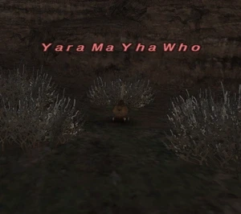
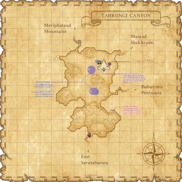

Level 75 reference · Zenith rules
|
Job: Notorious Monster |
 |

|
Zone |
Level |
Drops |
Steal |
Spawns |
Notes |
|
15-20 |
1 |
See Below | |||
|
HP = Detects Low HP; M = Detects Magic; Sc = Follows by Scent; T(S) = True-sight; T(H) = True-hearing JA = Detects job abilities; WS = Detects weaponskills; Z(D) = Asleep in Daytime; Z(N) = Asleep at Nighttime | |||||


Notes:
- Spawned by trading a Distilled Water to the ??? at J-10.
- The ??? will only take another Distilled Water every 50 minutes real time. Trades are affected by other players trading distilled water shortly before you, zoning does not reset this.
- When it has progressed from trading a Distilled Water, it will give the message, "The sprout is looking better." It can take many trades before the NM spawns.
- It seems to take at least 3 proper trades to spawn, sometimes more.
- When a trade is done and the message, "A repulsive creature emerges from the ground!" appears, the NM will spawn, automatically engage to whoever spawned it.
- Around 950HP
- Easily solo'd by a 19 BLU/WHM.
Adapted from Eden Wiki: Yara Ma Yha Who · Contributors and history · CC BY-SA 4.0. Revision 46630. Layout, links and optional background text adapted for Zenith.